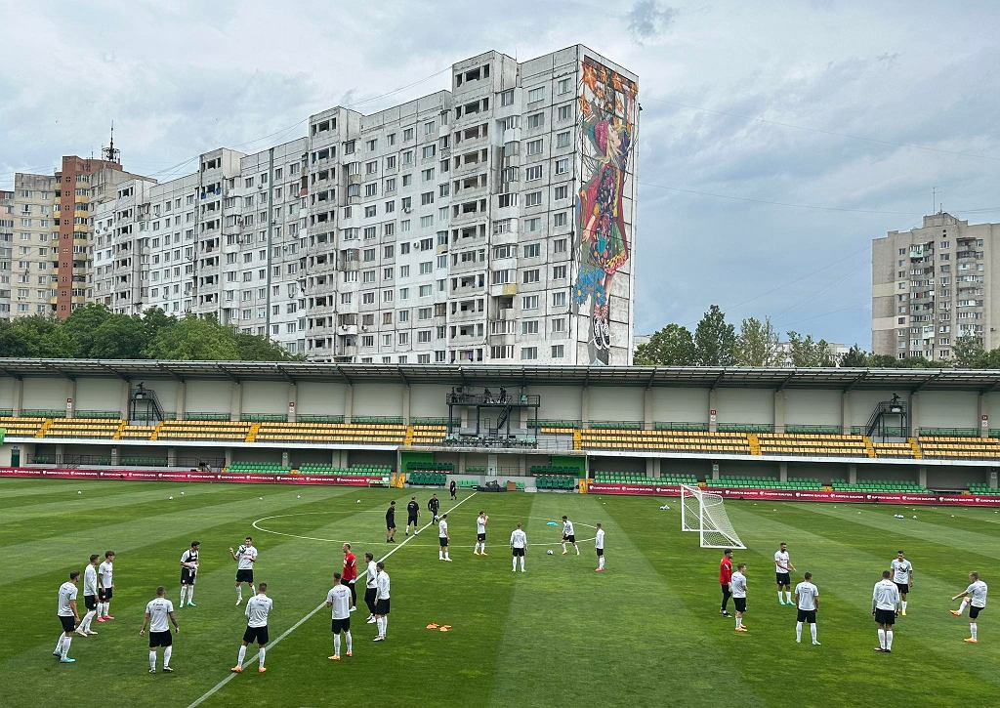

Tak selekcjoner reprezentacji Polski Fernando Santos ustawiał zespół przed wtorkowym spotkaniem z Mołdawią. Początek meczu o 20.45.
- Ustawienie taktyczne to są tylko liczby. Piłka nożna to dynamiczna gra. Najważniejsze będzie jej posiadanie. Mówię tu w kontekście meczu z Mołdawią, gdzie nasza strategia na mecz będzie nieco inna niż kilka dni temu na spotkanie z Niemcami - mówił w poniedziałek Fernando Santos.
Selekcjoner reprezentacji Polski do tej pory niechętnie opowiadał o personaliach, ale w poniedziałek zrobił wyjątek. Powiedział chociaż tyle, że w bramce przeciwko Mołdawii - co było oczywiste i bez jego słów - wystąpi Wojciech Szczęsny. - Nie ma powodów do zmiany. Jeżeli nie wydarzy się nic w trakcie treningu, Wojtek będzie grał od pierwszej minuty - przyznał Portugalczyk.
Fernando Santos ma po prostu taki styl
Santos z reguły pytania o skład i taktykę kwituje ironicznym uśmiechem. To nawet nie tyle wynika z faktu, że chce coś ukrywać, ile po prostu taki ma styl pracy. Nie lubi dzielić się zbyt wieloma informacjami. Nawet z piłkarzami, którzy o tym, kto zagra w danym spotkaniu, dowiadują się dopiero w dniu meczu na stadionie. - Selekcjoner wtajemnicza w swoje plany tylko swoich najbliższych współpracowników - słyszymy w PZPN, gdzie pytamy o styl pracy Santosa.
Portugalczyk, który jest na drugim zgrupowaniu z reprezentacją Polski, wprowadza swoje zasady. Kadra, jak podczas wielkich turniejów, w czerwcu wróciła do niemal codziennych konferencji prasowych. Z zawodnikami, bo Santos w przeciwieństwie do swoich poprzedników poza oficjalnymi aktywnościami - czyli konferencjami przed i po meczach, na których bywać musi - nie rozmawia z mediami. Ale kadra nie jest oblężoną twierdzą. Portugalczyk przed meczami z Niemcami i Mołdawią otworzył dla dziennikarzy w całości dwa treningi, choć pierwotnie miał otworzyć jeden. Te najważniejsze zajęcia - jak za poprzednich selekcjonerów - były co prawda zamknięte, ale Santos mimo to nie sprawia wrażenia, jakby chciał totalnie odciąć się od świata.
Szacunek i odpowiednie podejście
Szczęsny - Bednarek, Kędziora, Kiwior - Bereszyński, Bielik, D. Szymański, Kamiński - Zieliński, Skóraś - Lewandowski. Gdyby sugerować się ostatnim treningiem kadry w Kiszyniowie, skład na wtorkowy mecz z Mołdawią wyglądałby właśnie tak. Niewykluczone, że selekcjoner celowo mylił tropy, by na stadionie rywala - odkrytym i położonym między doskonale pamiętającymi poprzedni ustrój wysokimi blokami z wielkiej płyty - nie pokazać zbyt wiele.
 Zdjęcie z treningu reprezentacji PolskiTak powinien wyglądać skład na mecz Polski z Mołdawią:
Wojciech Szczęsny - Jan Bednarek, Tomasz Kędziora, Jakub Kiwior - Bartosz Bereszyński, Krystian Bielik (Karol Świderski), Damian Szymański, Jakub Kamiński - Piotr Zieliński, Michał Skóraś - Robert Lewandowski.